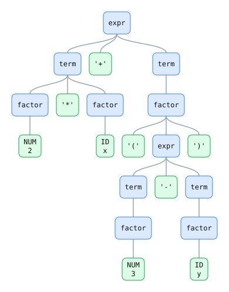
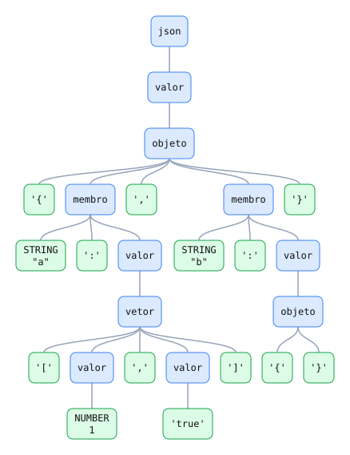

Faculdade de Computação (FACOM) - Compiladores I
Relatório técnico
RGA: 2024.1905.029-8 | 2024.1905.065-4 | 2024.1905.022-0
Novembro de 2026
Este trabalho implementa um gerador de analisadores sintáticos. O programa gerador lê uma gramática escrita em EBNF e produz, em ANSI C, o código de um analisador sintático descendente recursivo para a linguagem descrita por ela. O gerador não lê programas do usuário. Ele só escreve o código do analisador, e é esse analisador, depois de compilado, que lê o programa token a token e diz se ele pertence à linguagem.
O gerador faz cinco etapas: leitura da gramática, verificação semântica, cálculo dos conjuntos anulável, FIRST e FOLLOW, verificação da condição LL(1) e geração de código. O resultado foi validado com cinco gramáticas (três válidas e duas que devem ser recusadas), incluindo a de Micro C, que usa o scanner feito no TP1. Como extra, o analisador gerado também desenha a árvore de derivação, em texto e em imagem SVG.
O código tem cerca de 3900 linhas de C (src/), compila com gcc -ansi -pedantic -Wall -Wextra sem nenhum aviso e foi verificado com valgrind --leak-check=full, sem vazamentos. Os testes automáticos totalizam 26 casos, e todos passam.
Os módulos de src/ seguem as etapas:
| Etapa | Arquivo | Responsabilidade |
|---|---|---|
| 1. Leitura | ebnf_lexer.c, ebnf_parser.c | Lê as seções TOKENS e RULES e monta a árvore Expr de cada regra |
| 2. Verificação | verificacao.c | Indefinidos, terminais não declarados, inalcançáveis, improdutivos, recursão à esquerda |
| 3. Conjuntos | conjuntos.c | Anulável, FIRST e FOLLOW |
| 4. LL(1) | ll1.c | As três condições LL(1) |
| 5. Geração | codegen.c | Escreve o .c e o .h do analisador |
| Apoio | gramatica.c, bitset.c, util.c, main.c | Estruturas, conjuntos de bits, mensagens de erro e ordem das etapas |
O main.c executa as etapas em sequência e para na primeira que encontra erros. Avisos não impedem a geração, mas erros impedem, e nesse caso nenhum arquivo é escrito.
Um arquivo .ebnf tem duas seções. Em TOKENS ficam os terminais, definidos por expressões regulares entre barras, e as diretivas SKIP para o que deve ser ignorado. Em RULES ficam as regras, e a primeira define o símbolo inicial. Terminais com nome usam só maiúsculas, não terminais começam com minúscula e palavras fixas da linguagem vão entre aspas. Exemplo (expr.ebnf):
TOKENS
NUM = /[0-9]+/ ;
ID = /[a-zA-Z_][a-zA-Z0-9_]*/ ;
SKIP = /[ \t\r\n]+/ ;
RULES
expr = term { ( "+" | "-" ) term } ;
term = factor { ( "*" | "/" ) factor } ;
factor = NUM | ID | "(" expr ")" ;
Na memória, o lado direito de cada regra é uma árvore Expr com sete tipos de nó: terminal, não terminal, sequência, alternativa, opcional [ ], repetição { } e vazio. Os parênteses só agrupam e não geram nó. Todas as etapas seguintes percorrem essa árvore, e os atributos calculados (anulável, FIRST e FOLLOW) ficam em cada nó, não só em cada regra.
A própria notação EBNF é lida por um analisador descendente recursivo, com uma função por regra da gramática da notação: parse_expr lê seq { "|" seq }, parse_seq lê { fator } e parse_fator lê terminal, não terminal ou um grupo entre ( ), [ ] ou { }. Uma sequência com um só fator devolve o próprio fator, e uma alternativa com um só ramo devolve o próprio ramo, de modo que a árvore não tem nós inúteis. Quando há erro de sintaxe, o leitor descarta tokens até o próximo ; e continua, para reportar vários erros de uma vez.
[ a ] e { a } são sempre produtivos, pois podem derivar a cadeia vazia.Os três conjuntos são calculados por iteração até o ponto fixo: uma passada sobre todas as regras se repete enquanto algum conjunto mudar. A função de união de conjuntos de bits devolve 1 quando o destino muda, o que dá o critério de parada. As regras usadas para um nó e são:
| Nó | Anulável | FIRST |
|---|---|---|
| terminal t | não | {t} |
| não terminal A | anulável(A) | FIRST(A) |
vazio, [ a ], { a } | sim | vazio / FIRST(a) / FIRST(a) |
| sequência a1 ... an | todos anuláveis | união dos FIRST(ai) até o primeiro ai não anulável |
| alternativa a1 | ... | an | algum anulável | união dos FIRST(ai) |
O FOLLOW é propagado de cima para baixo. O FOLLOW da regra de um não terminal A recebe FOLLOW(A), e o do símbolo inicial recebe $. Numa sequência, percorre-se da direita para a esquerda mantendo o "resto": o FOLLOW de ai recebe o FIRST do sufixo ai+1 ... an e, se esse sufixo for anulável, também o FOLLOW da sequência. Em { a }, o FOLLOW de a recebe FOLLOW({ a }) e também FIRST(a), porque depois de a pode vir outra repetição. Para expr.ebnf o programa calcula FIRST(expr) = {NUM, ID, '('} e FOLLOW(expr) = {$, ')'}, o que coincide com o cálculo feito à mão.
Monta-se uma matriz em que a posição (A, B) vale 1 quando B pode aparecer na extremidade esquerda da regra de A. Numa sequência contam-se os filhos até o primeiro não anulável, o que pega casos como item = [ "," ] lista, em que o prefixo opcional não esconde a recursão. Depois calcula-se o fecho transitivo da matriz (estilo Warshall) e olha-se a diagonal: se A começa a própria regra, a recursão é direta, e se A só volta a si passando por outros não terminais, é indireta. A gramática de teste recursao_esquerda.ebnf é recusada com quatro erros, dois diretos (expr e term) e dois indiretos (lista e item).
Para cada nó da árvore verifica-se:
[ a ] e { a }, a não é anulável e FIRST(a) é disjunto do FOLLOW da construção.As violações de 1, 2 e da parte "não anulável" de 3 são erros. A interseção FIRST(a) com o FOLLOW em [ ] e { } é só um aviso, resolvido de forma gulosa (seção 4.7). Exemplo de erro, com a gramática conflito_ll1.ebnf:
conflito_ll1.ebnf:8:10: erro: conflito LL(1) em stmt: alternativas 1 e 2 comecam com {ID}
conflito_ll1.ebnf: a gramatica nao e LL(1); nenhum codigo foi gerado
Cada não terminal vira uma função parse_X(). A tradução segue o esquema abaixo, em que as condições testam o FIRST do ramo:
| Construção | Código gerado |
|---|---|
| terminal t | match(T); |
| não terminal A | parse_A(); |
| sequência | a tradução de cada filho, em ordem |
| alternativa | if (FIRST(a1)) {...} else if (FIRST(a2)) {...} else { erro }. O ramo anulável vai no else. |
[ a ] | if (FIRST(a)) {...} |
{ a } | while (FIRST(a)) {...} |
O teste de FIRST usa até três comparações diretas (tok.tipo == T_A || ...). Com mais tokens, o gerador cria uma constante conj_N e chama pertence(); conjuntos iguais compartilham a mesma constante. O código gerado para expr é:
void parse_expr(void)
{
parse_term();
while (tok.tipo == T_MAIS || tok.tipo == T_MENOS) {
if (tok.tipo == T_MAIS) {
match(T_MAIS);
} else if (tok.tipo == T_MENOS) {
match(T_MENOS);
} else {
erro_sintatico(conj_0);
}
parse_term();
}
}
Os erros sintáticos dizem a posição e os tokens esperados, que vêm dos conjuntos FIRST e FOLLOW: linha 1, coluna 10: encontrado ')', esperado um de {NUM, ID, '('}.
Na regra de Micro C comando_if = "if" "(" expressao ")" comando [ "else" comando ], o FIRST do opcional e o FOLLOW do comando_if têm o else em comum. O gerador emite o aviso conflito LL(1) em comando_if: FIRST e FOLLOW de [ ] se intersectam (resolvido de forma gulosa) em {'else'}. O código gerado entra no if sempre que o token é else, então o else fica com o if mais próximo, como em C.
Na gramática com léxico próprio, cada expressão regular de TOKENS é convertida em um autômato. A expressão é lida com uma gramática de alternativa, concatenação, repetição (*, +, ?) e átomos (grupos, classes [a-z] e [^...], ponto e escapes). Dela se monta um AFN pela construção de Thompson, que é determinizado pela construção de subconjuntos, e o AFD é escrito como um switch em C que devolve o tamanho do maior prefixo reconhecido. O léxico testa todos os literais e todos os terminais com regex e fica com o maior casamento. Em caso de empate, o literal vence, e é assim que "while" não vira ID.
Quando a gramática declara TOKENS EXTERN "tokens.h" ; e o gerador roda com --scanner microc, o analisador não tem léxico próprio. Ele chama proximo_token(), uma função em microc/scanner.c que encapsula o scanner do TP1, e os terminais da gramática passam a ser os nomes de TokenType. O arquivo tokens.h é lido pelo gerador (microc_carregar_tokens_h), que confere se cada terminal existe na enumeração e traduz cada literal ("+" vira PLUS, "if" vira IF etc.). O analisador também lê o arquivo de tokens gravado pelo TP1, com a opção --tokens.
A gramática de Micro C é a do Apêndice B do livro-texto, fatorada para LL(1): atribuicao_interna e fator tinham duas alternativas iniciadas por ID, e o opcional [ "[" expressao "]" ] substitui as duas.
Correções feitas no TP1 para esta integração (marcadas com TP2 ALTERADO nos fontes):
microc_yy e %option noyywrap, com a regra <<EOF>> devolvendo END_OF_FILE;TokenType, Token e YYSTYPE movidos para o tokens.h;yyless(0) e é contada depois (antes o erro aparecia na linha seguinte);ID e das constantes vem da tabela de strings, com os escapes já convertidos, e o token UNDEF leva a mensagem de erro do scanner;TokenType. Valores até PRINT são sempre TokenType, então o ! (código 33) é devolvido como NOT;microc_tabela_liberar() libera a tabela de strings, para não haver vazamento.Como o scanner do TP1 só guarda a linha de cada token, as mensagens de erro neste modo não têm coluna.
Com a geração em modo --tree, o analisador aceita duas opções. A opção --tree imprime a árvore no terminal, com um nível de recuo por chamada de procedimento e as folhas sendo os tokens consumidos. A opção --svg arquivo.svg grava a mesma árvore como imagem. Para a entrada 2 * x + (3 - y):
expr
term
factor
NUM '2'
'*'
factor
ID 'x'
'+'
term
...
Como a imagem é produzida. As funções arvore_entra e match, que já imprimiam o texto, também guardam cada nó num vetor, em pré-ordem, com o índice do pai. Ao fim de uma análise bem-sucedida, a função svg_gravar calcula as posições e escreve o arquivo. O layout usa contornos: cada subárvore guarda o limite esquerdo e o direito de cada nível. Os filhos são colocados da esquerda para a direita, o mais perto possível sem que dois nós do mesmo nível se toquem, e o pai fica centralizado entre o primeiro e o último filho. Como os filhos têm índice maior que o pai, basta percorrer o vetor de trás para a frente, e o custo é linear no número de nós vezes a altura. O arquivo SVG não depende de bibliotecas nem de programas externos e abre em qualquer navegador. Não terminais saem em azul e tokens em verde, e tokens com lexema variável mostram o lexema embaixo do nome. Lexemas com mais de 20 caracteres são abreviados, e caracteres especiais de XML são escapados.

2 * x + (3 - y) com a gramática expr.
{"a": [1, true], "b": {}} com a gramática json.O código dessa parte fica no vetor rt_svg de src/codegen.c e só é incluído no analisador quando a geração usa --tree. Nos testes, a memória foi verificada com valgrind, com e sem --svg.
O comando make test executa o gerador e os analisadores gerados e compara cada saída (texto e código de saída) com o arquivo esperado. Foram usadas cinco gramáticas:
| Gramática | Descrição | Programas | Resultado |
|---|---|---|---|
expr.ebnf | expressões aritméticas | 3 aceitos, 4 rejeitados | passa |
json.ebnf | JSON simplificado (objetos, vetores, strings, números, literais) | 3 aceitos, 3 rejeitados | passa |
microc.ebnf | Micro C, com o scanner do TP1 | 3 aceitos, 3 rejeitados | passa |
recursao_esquerda.ebnf | recusada: 2 recursões diretas e 2 indiretas | nenhum | recusada, 4 erros |
conflito_ll1.ebnf | recusada: alternativas começando com ID | nenhum | recusada, 1 erro |
Os programas rejeitados cobrem erro sintático (expressão incompleta em 2 * (x + ), parêntese que não fecha, dois números seguidos, falta de : em JSON, vírgula sobrando antes de ], ; no lugar de uma expressão em Micro C), erro léxico (caractere @ e string não terminada em Micro C) e declaração fora do lugar em Micro C (uma declaração depois de um comando, quando o bloco só aceita declarações no início). Os 26 casos de make test são: 5 gramáticas, 19 programas e 2 conferências da árvore (texto e SVG de 2 * x + (3 - y)). Resultado final: 26 de 26 testes passam.
Outras verificações feitas:
make clean && make compila sem nenhum aviso com gcc -ansi -pedantic -Wall -Wextra (só o lex.yy.c do flex é compilado sem essa exigência);valgrind --leak-check=full não aponta vazamentos nem acessos inválidos no gerador (rodado com todas as gramáticas) nem nos analisadores gerados (rodados com todos os programas de teste, com --tree e --svg);TODO(aluno) restou no código.[ ] e { } é aviso, não erro. É o que permite aceitar o else pendente de Micro C, com a regra gulosa. Já um conteúdo anulável dentro de { } é erro, porque o laço poderia não consumir nada e não terminar.bubble.mc, de Micro C, tem 534 nós e gera uma imagem com cerca de 8700 pixels de largura. Por ser vetorial, ela pode ser ampliada ou reduzida no navegador sem perder qualidade.Usamos IA generativa (Claude Code, modelo Claude Sonnet 5.5) apenas na fase final: para explicar o código, para escrever a extensão da árvore em SVG, para criar a gramática JSON e os testes da árvore, para pequenos ajustes (mensagem do aviso de inalcançável e remoção dos comentários TODO(aluno)) e para o README. A implementação das etapas do gerador foi feita pelo grupo, sem IA. O registro detalhado de cada uso, no formato do TP1, está em USO_IA.md.
O gerador cumpre as cinco etapas pedidas: lê a EBNF, verifica a gramática, calcula anulável, FIRST e FOLLOW, confere a condição LL(1) e escreve um analisador descendente recursivo em ANSI C. Ele recusa gramáticas com recursão à esquerda e com conflitos LL(1), aceita o else pendente de Micro C com a regra gulosa, e funciona tanto com o léxico gerado a partir das expressões regulares quanto com o scanner do TP1. A extensão da árvore de derivação em SVG torna fácil conferir o comportamento do analisador: quando uma entrada não é reconhecida como esperado, ver a árvore mostra em qual procedimento o analisador parou ou qual regra foi escolhida.
tokens.h).